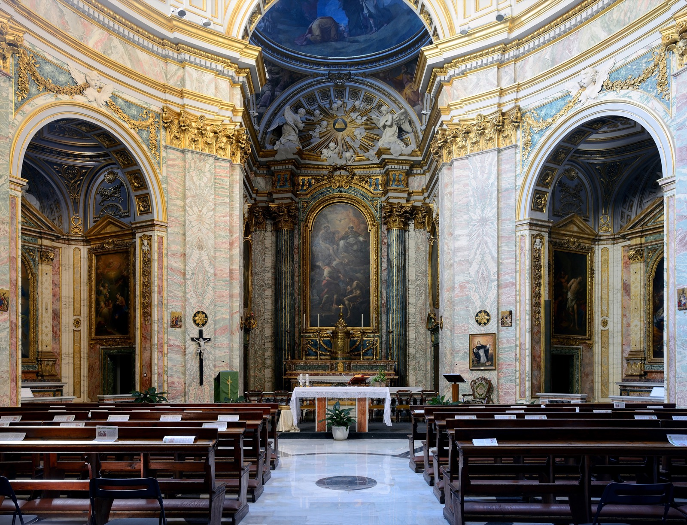

Order of the Most Holy Trinity and of the Captives
The Trinitarian Order
Glory to the Trinity and freedom to the captives
A Catholic religious order of priests and brothers, founded at Cerfroid and approved by Pope Innocent III on 17 December 1198. For more than eight centuries its members have joined contemplation of the Most Holy Trinity to a ministry of redemption and mercy.

Explore
The Order today
A worldwide family
Trinitarians serve in parishes, schools, prisons, hospitals, missions, and projects for Christians and others who suffer persecution or new forms of slavery. The International Trinitarian Solidarity (SIT) coordinates much of this work from Rome.
Numbers are date-stamped because published figures change. See Sources & editorial policy.
Start here
New to the Trinitarians?
Begin with a short introduction to the Order’s identity and charism, then read the story of its foundation and reform. Inquirers can go directly to the vocations page or contact the U.S. Province and the Third Order.
Sources for this page
- Official Curia Generalizia, Order of the Most Holy Trinity and of the Captives.
- Official International Trinitarian Solidarity (SIT), figures for the Trinitarian Family.
- Official U.S. Province, Our Mission Today.
- Secondary Wikipedia, “Trinitarians”, used only as a cross-check.
Items marked Secondary are academic or reference works, not official publications of the Order. Official texts are normative where they differ.